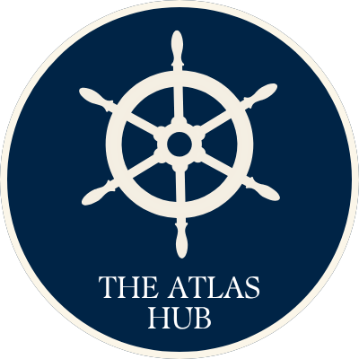
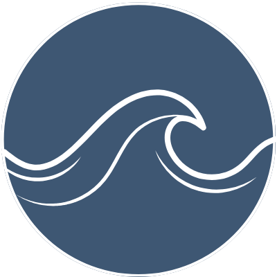

WHATCOM MARITIME
STORYTELLING ATLAS
☰
Atlas Hub
Tides of Change
Mapped Memories
Waterfront Voices
Local Seafood

Tides of Change
Tap a theme, map point, or story card
✥
All Stories
Connecting to ArcGIS Online…
Reset map
← Back to map
TIDES OF CHANGE
Story
Open full screen ↗
Loading StoryMap…
Open story →